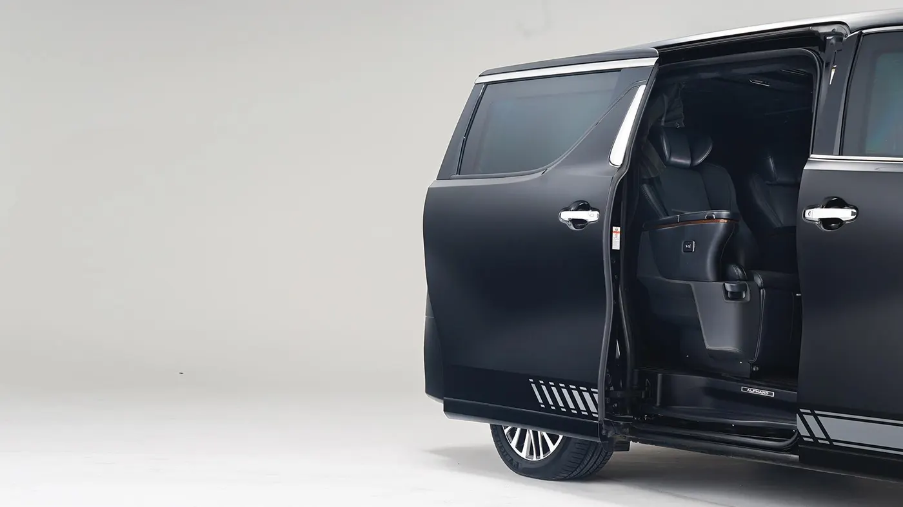
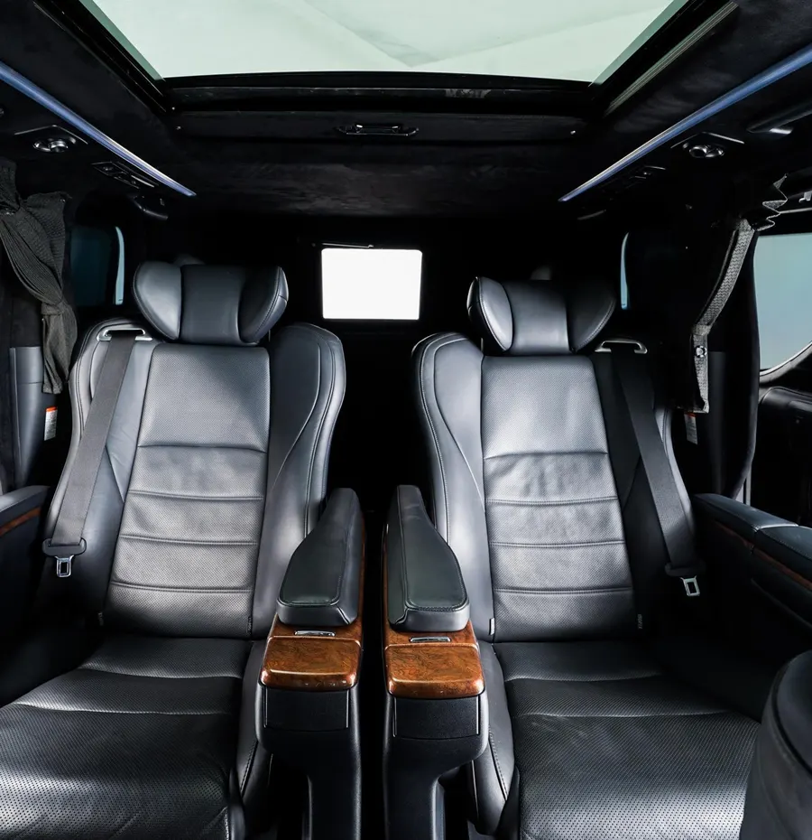

Lindungi yang paling berharga, tanpa mengorbankan kenyamanan.
Perlindungan balistik terintegrasi untuk kendaraan dan aset bernilai tinggi. Dirancang sesuai kebutuhan dan dipasang secara profesional.

Level perlindungan balistik
Tersedia dalam konfigurasi untuk ancaman balistik terpilih.
Kaca 24 mm
Perlindungan terhadap ancaman senjata genggam dan berkecepatan tinggi.
- 9mm FMJ RN (handgun)
- .44 Magnum SJHP (handgun)
- .357 Magnum JSP (handgun)
- 12 gauge shotgun (00 buckshot)
Kaca 42 mm
Perlindungan terhadap senapan berdaya tinggi.
- 5,56 × 45 mm M193 (rifle)
- 7,62 × 39 mm MSC (rifle)
- 7,62 × 51 mm M80 (rifle)
- 7,62 × 54R LPS (rifle)
Level dan konfigurasi ditentukan sesuai kebutuhan Anda. Detail pengujian dan ketentuan dibahas saat konsultasi.
Perlindungan menyeluruh
Area yang dilindungi
- Kaca depan
- Kaca belakang
- Kaca samping, depan sampai belakang
- Bodi depan
- Bodi pintu, depan dan belakang
- Bodi belakang
Opsi tambahan
- Perlindungan atap dan lantai
- Aktivasi kaca jendela elektrik
- Kursi penumpang tambahan di kabin
- Perlindungan sisi mesin dan benturan depan
Peningkatan kendaraan
- Suspensi diperkuat untuk bobot kendaraan lapis baja
- Peningkatan rem untuk daya henti dan kestabilan
- Ban run-flat: tetap melaju saat tekanan ban hilang
Konfigurasi
- Armor 5: kendaraan hingga lima penumpang
- Armor CIT: kendaraan angkut kas
- Perlindungan fixed-site: kaca dan panel bangunan
Lihat lebih dekat


Untuk setiap sektor
Mining
- Mobilitas manajemen dan tamu penting
- Pengamanan perjalanan dan aset bernilai tinggi
Agrikultur
- Pengangkutan kas operasional dan penggajian
- Mobilitas pimpinan di wilayah operasi
Cara kerjanya
- Ceritakan kebutuhanIsi formulir singkat atau chat langsung.
- RekomendasiKami susun opsi yang paling cocok, termasuk spesifikasi lengkap.
- Penawaran resmiHarga, waktu, dan ketentuan disampaikan secara jelas.
- Pengiriman & dukunganKami mendampingi sampai unit beroperasi.
Diskusikan kebutuhan Anda secara langsung.
Kebutuhan perlindungan bersifat pribadi. Cukup sebutkan jenis kendaraan atau aset, kami lanjutkan secara tertutup.
Pertanyaan umum
Berapa level perlindungan yang tersedia?
Dua level: BR4 dengan kaca 24 mm dan BR6 dengan kaca 42 mm. Rincian ancaman yang dicakup ada di bagian Level perlindungan balistik.
Apakah kenyamanan kendaraan tetap terjaga?
Solusi dirancang agar fungsi, kenyamanan, dan tampilan kendaraan tetap terjaga. Suspensi dan rem ditingkatkan sesuai bobot tambahan.
Apa saja ketentuan pembelian?
Pembelian mengikuti ketentuan dan proses verifikasi yang berlaku. Kami jelaskan saat konsultasi.